introduction-to-alpsnmr.RmdThe AlpsNMR package was written with two purposes in mind:
Functions from this package written for data analysts and NMR scientists are prefixed with nmr_, while higher level functions written for IT pipeline builders are prefixed with pipe_. The main reason why all exported functions have a prefix is to make it easy for the user to discover the functions from the package. By typing nmr_ RStudio will return the list of exported functions. In the R terminal, nmr_ followed by the tab key (⇥) twice will have the same effect. Other popular packages, follow similar approaches (e.g: forcats: fct_*, stringr: str_*).
This vignette is written for the first group. It assumes some prior basic knowledge of NMR and data analysis, as well as some basic R programming. In case you are interested in building pipelines with this package, you may want to open the file saved in this directory (run it on your computer):
pipeline_example <- system.file("pipeline-rmd", "pipeline_example.R", package = "AlpsNMR")
print(pipeline_example)library(AlpsNMR)
#> Registered S3 method overwritten by 'seriation':
#> method from
#> reorder.hclust gclus
#> Warning: replacing previous import 'ggplot2::last_plot' by 'plotly::last_plot'
#> when loading 'rDolphin'
#>
#> Attaching package: 'AlpsNMR'
#> The following object is masked from 'package:stats':
#>
#> filter
library(ggplot2)This package is able to parallellize several functions through the use of the future and furrr packages. Whether to parallelize or not is left to the user that can control the parallellization by setting “plans”.
MeOH_plasma_extraction datasetTo explore the basics of the AlpsNMR package, we have included four NMR samples acquired in a 600 MHz Bruker instrument bundled with the package. The samples are pooled quality control plasma samples, that were extracted with methanol, and therefore only contain small molecules.
If you have installed this package, you can obtain the directory where the four samples are with the command
MeOH_plasma_extraction_dir <- system.file("dataset-demo", package = "AlpsNMR")
print(MeOH_plasma_extraction_dir)
#> [1] "/home/travis/R/Library/AlpsNMR/dataset-demo"The demo directory includes four samples (zipped) and a dummy Excel metadata file.
fs::dir_ls(MeOH_plasma_extraction_dir)
#> /home/travis/R/Library/AlpsNMR/dataset-demo/10.zip
#> /home/travis/R/Library/AlpsNMR/dataset-demo/20.zip
#> /home/travis/R/Library/AlpsNMR/dataset-demo/30.zip
#> /home/travis/R/Library/AlpsNMR/dataset-demo/40.zip
#> /home/travis/R/Library/AlpsNMR/dataset-demo/README.txt
#> /home/travis/R/Library/AlpsNMR/dataset-demo/dummy_metadata.xlsxGiven the name of the dataset, one may guess that the dataset was used to check the Methanol extraction in serum samples. The dummy metadata consists of dummy information, just for the sake of showing how this package can integrate external metadata. The excel file consists of two tidy tables, in two sheets.
MeOH_plasma_extraction_xlsx <- file.path(MeOH_plasma_extraction_dir, "dummy_metadata.xlsx")
exp_subj_id <- readxl::read_excel(MeOH_plasma_extraction_xlsx, sheet = 1)
subj_id_age <- readxl::read_excel(MeOH_plasma_extraction_xlsx, sheet = 2)
print(exp_subj_id)
#> # A tibble: 4 x 3
#> NMRExperiment SubjectID TimePoint
#> <chr> <chr> <chr>
#> 1 10 Ana baseline
#> 2 20 Ana 3 months
#> 3 30 Elia baseline
#> 4 40 Elia 3 months
print(subj_id_age)
#> # A tibble: 2 x 2
#> SubjectID Age
#> <chr> <dbl>
#> 1 Ana 29
#> 2 Elia 0The function to read samples is called nmr_read_samples. It expects a character vector with the samples to load that can be paths to directories of Bruker format samples or paths to JDX files.
Additionally, this function can filter by pulse sequences (e.g. load only NOESY samples) or loading only metadata.
zip_files <- fs::dir_ls(MeOH_plasma_extraction_dir, glob = "*.zip")
print(zip_files)
#> /home/travis/R/Library/AlpsNMR/dataset-demo/10.zip
#> /home/travis/R/Library/AlpsNMR/dataset-demo/20.zip
#> /home/travis/R/Library/AlpsNMR/dataset-demo/30.zip
#> /home/travis/R/Library/AlpsNMR/dataset-demo/40.zip
dataset <- nmr_read_samples(sample_names = zip_files)
print(dataset)
#> An nmr_dataset (4 samples)As we have not added any metadata to this dataset, the only column we see is the NMRExperiment:
Initally our dataset only has the NMRExperiment column:
nmr_meta_get(dataset, groups = "external")
#> # A tibble: 4 x 1
#> NMRExperiment
#> <chr>
#> 1 10
#> 2 20
#> 3 30
#> 4 40The exp_subj_id table we loaded links the NMRExperiment to the SubjectID.
As we already have the NMRExperiment column, we can use it as the merging column (note that both columns have the same column name to match the metadata such as group class, age, BMI…):
dataset <- nmr_meta_add(dataset, metadata = exp_subj_id, by = "NMRExperiment")
nmr_meta_get(dataset, groups = "external")
#> # A tibble: 4 x 3
#> NMRExperiment SubjectID TimePoint
#> <chr> <chr> <chr>
#> 1 10 Ana baseline
#> 2 20 Ana 3 months
#> 3 30 Elia baseline
#> 4 40 Elia 3 monthsIf we have info from different files we can match them. For instance, now we have the SubjectID information so we can add the table that adds the SubjectID to the Age.
dataset <- nmr_meta_add(dataset, metadata = subj_id_age, by = "SubjectID")
nmr_meta_get(dataset, groups = "external")
#> # A tibble: 4 x 4
#> NMRExperiment SubjectID TimePoint Age
#> <chr> <chr> <chr> <dbl>
#> 1 10 Ana baseline 29
#> 2 20 Ana 3 months 29
#> 3 30 Elia baseline 0
#> 4 40 Elia 3 months 0Now we have our metadata integrated in the dataset and we can make use of it in further data analysis steps.
1D NMR samples can be interpolated together, in order to arrange all the spectra into a matrix, with one row per sample. The main parameters we would need is the range of ppm values that we want to interpolate and the resolution.
We can see the ppm resolution by looking at the ppm axis of one sample:
ppm_res <- nmr_ppm_resolution(dataset)[[1]]
message("The ppm resolution is: ", format(ppm_res, digits = 2), " ppm")
#> The ppm resolution is: 0.00023 ppmWe can interpolate the dataset, obtaining an nmr_dataset_1D object:
This operation changes the class of the object, as now the data is on a matrix. The dataset is now of class nmr_dataset_1D. The axis element is now a numeric vector and the data_1r element is a matrix.
The AlpsNMR package offers the possibility to plot nmr_dataset_1D objects. Plotting many spectra with so many points is quite expensive so it is possible to include only some regions of the spectra or plot only some samples.
Use ?plot.nmr_dataset_1D to check the parameters, among them:
NMRExperiment: A character vector with the NMR experiments to plotchemshift_range: A ppm range to plot only a small region, or to reduce the resolutioninteractive: To make the plot interactive - ...: Can be used to pass additional parameters such as color = "SubjectID" that are passed as aesthetics to ggplot.The option interactive = TRUE described above has some performance limitations. As high performance workaround, you can make many plots interactive with the function plot_interactive.
This function will use WebGL technologies to create a webpage that, once opened, allows you to interact with the plot.
Due to technical limitations, these plots need to be opened manually and can’t be embedded in RMarkdown documents. Therefore, the function saves the plot in the directory for further exploration. Additionally, some old web browsers may not be able to display these interactive plots correctly.
plt <- plot(dataset, NMRExperiment = c("10", "30"), chemshift_range = c(2.2, 2.8))
plot_interactive(plt, "plot_region.html")Some regions can easily be excluded from the spectra with nmr_exclude_region. Note that the regions are fully removed and not zeroed, as using zeros complicates a lot the implementation1 and has little advantages.
regions_to_exclude <- list(water = c(4.6, 5), methanol = c(3.33, 3.39))
dataset <- nmr_exclude_region(dataset, exclude = regions_to_exclude)
plot(dataset, chemshift_range = c(4.2, 5.5))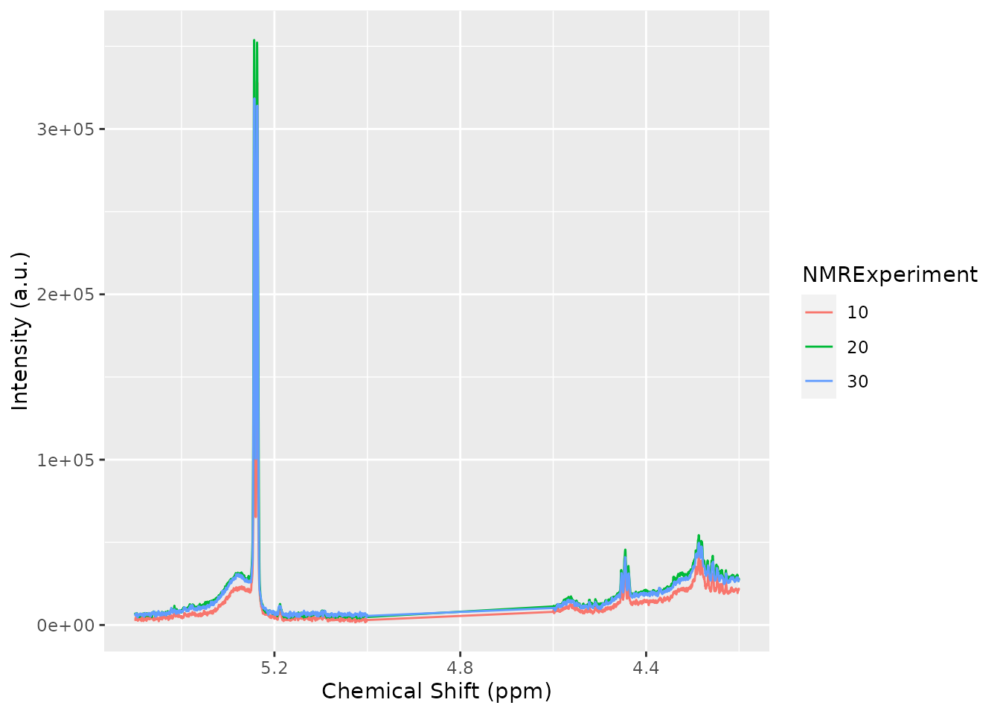
Maybe we just want to analyze a subset of the data, e.g., only a class group or a particular gender. We can filter some samples according to their metadata as follows:
The AlpsNMR package includes robust PCA analysis for outlier detection. With such a small demo dataset, it is not practical to use, but check out the documentation of nmr_pca_outliers_* functions.
pca_outliers_rob <- nmr_pca_outliers_robust(dataset, ncomp = 3)
nmr_pca_outliers_plot(dataset, pca_outliers_rob)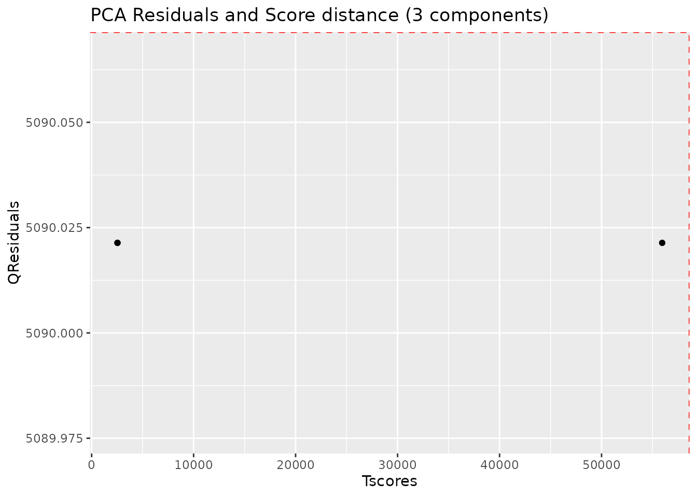
Spectra may display an unstable baseline, specially when processing blood/fecal blood/fecal samples. If so, nmr_baseline_removal subtract the baseline by means of Asymmetric Least Squares method.
See before:
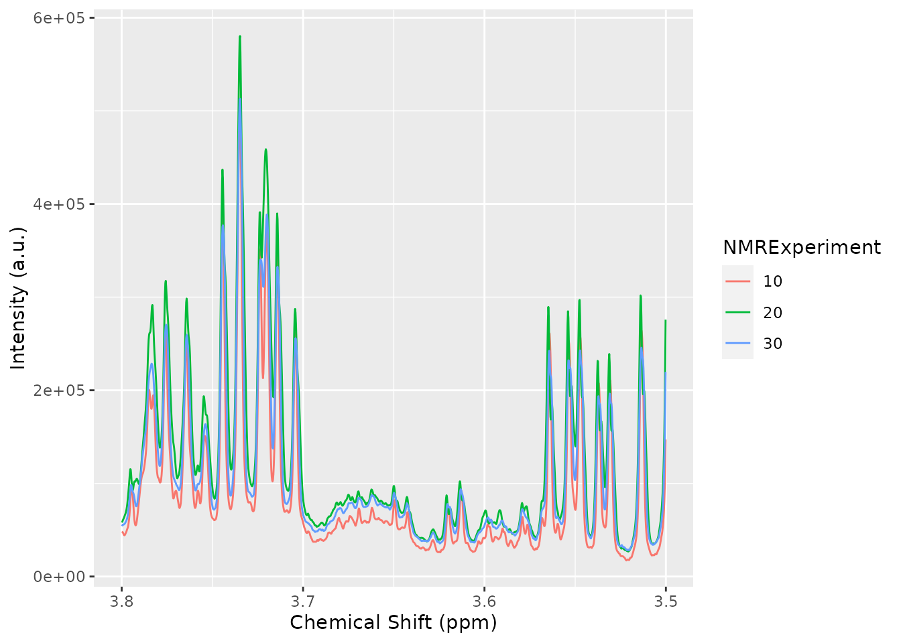
And after:
dataset = nmr_baseline_removal(dataset, lambda = 6, p = 0.01)
plot(dataset, chemshift_range = c(3.5,3.8))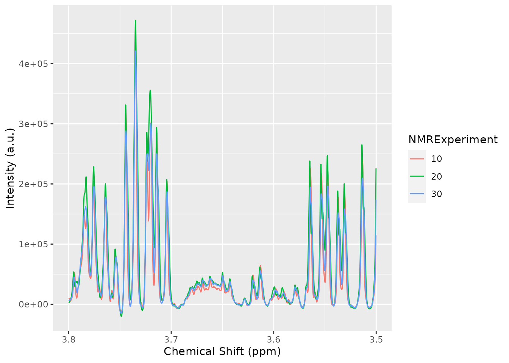
The peak detection is performed on short spectra segments using a continuous wavelet transform. See ?nmr_detect_peaks for more information.
Our current approach relies on the use of the baseline threshold (baselineThresh) automatic calculated (see ?nmr_baseline_threshold) and the Signal to Noise Threshold (SNR.Th) to discriminate valid peaks from noise.
The combination of the baselineThresh and the SNR.Th optimizes the number of actual peaks from noise.
The advantage of the SNR.Th method is that it estimates the noise level on each spectra region independently, so in practice it can be used as a dynamic baseline threshold level.
peak_table <- nmr_detect_peaks(dataset,
nDivRange_ppm = 0.1,
scales = seq(1, 16, 2),
baselineThresh = NULL, SNR.Th = 3)
NMRExp_ref <- nmr_align_find_ref(dataset, peak_table)
message("Your reference is NMRExperiment ", NMRExp_ref)
#> Your reference is NMRExperiment 20
nmr_detect_peaks_plot(dataset, peak_table, NMRExperiment = "20", chemshift_range = c(3.5,3.8))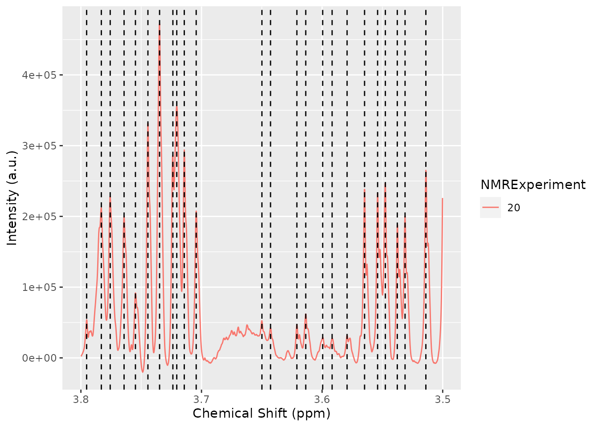
To align the sample, we use the nmr_align function, which in turn uses a hierarchical clustering method (see ?nmr_align for further details).
The maxShift_ppm limits the maximum shift allowed for the spectra.
nmr_exp_ref <- nmr_align_find_ref(dataset, peak_table)
dataset_align <- nmr_align(dataset, peak_table, nmr_exp_ref, maxShift_ppm = 0.0015, acceptLostPeak = FALSE)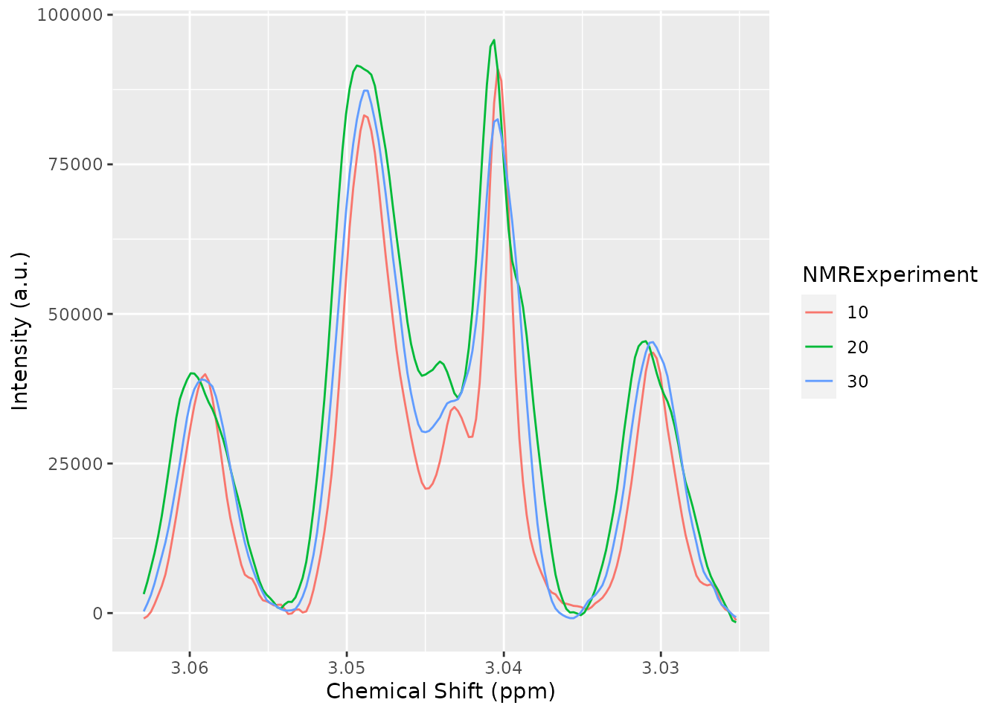
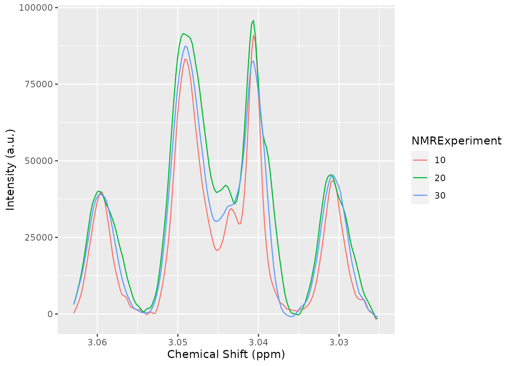
There are multiple normalization techniques available. The most strongly recommended is the pqn normalization, but it may not be fully reliable when the number of samples is small, as it needs a computation of the median spectra. Nevertheless, it is possible to compute it:
dataset_norm <- nmr_normalize(dataset_align, method = "pqn")
#> Warning in norm_pqn(samples[["data_1r"]]): The Probabalistic Quotient
#> Normalization requires several samples to compute the median spectra. Your
#> number of samples is lowThe AlpsNMR package offers the possibility to extract additional diagnostic information with nmr_diagnose(dataset). For now, this feature is only used on the normalization to explore the normalization factors applied to each sample:
diagnostic <- nmr_diagnose(dataset_norm)
print(diagnostic$norm_factor)
#> NMRExperiment norm_factor norm_factor_norm
#> 1 10 522485930 0.8705915
#> 2 20 688575310 1.1473377
#> 3 30 598587425 0.9973955
#> 4 40 601713644 1.0026045
print(diagnostic$plot)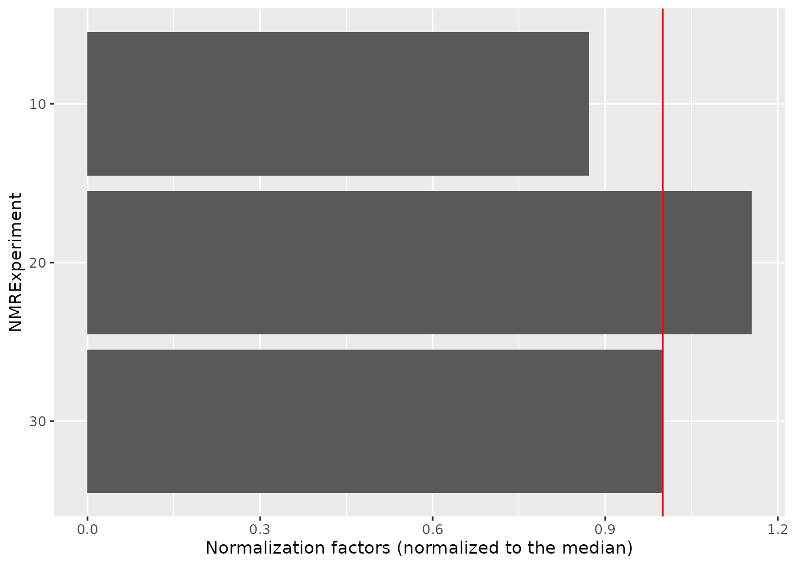
If we want to integrate the whole spectra, we need ppm from the peak_table. See Peak detection section. The function nmr_integrate_peak_positions generates a new nmr_dataset_1D object containing the integrals from the peak_table (ppm values corresponding to detected peaks).
peak_table_integration = nmr_integrate_peak_positions(
samples = dataset_norm,
peak_pos_ppm = peak_table$ppm,
peak_width_ppm = 0.006)
peak_table_integration = get_integration_with_metadata(peak_table_integration)We can also integrate with a specific peak position and some arbitrary width:
nmr_data(
nmr_integrate_peak_positions(samples = dataset_norm,
peak_pos_ppm = c(4.1925, 4.183, 4.1775, 4.17),
peak_width_ppm = 0.006)
)
#> ppm_4.1925 ppm_4.1830 ppm_4.1775 ppm_4.1700
#> 10 3.190189e-08 3.298304e-08 2.313092e-08 1.339955e-08
#> 20 2.549221e-08 1.779341e-08 1.812701e-08 9.971924e-09
#> 30 2.570141e-08 2.548584e-08 1.910047e-08 8.212517e-09
#> 40 2.655425e-08 3.020573e-08 2.637977e-08 1.838752e-08Imagine we only want to integrate the four peaks corresponding to the pyroglutamic acid:
pyroglutamic_acid_region <- c(4.15, 4.20)
plot(dataset_norm, chemshift_range = pyroglutamic_acid_region) +
ggplot2::ggtitle("Pyroglutamic acid region")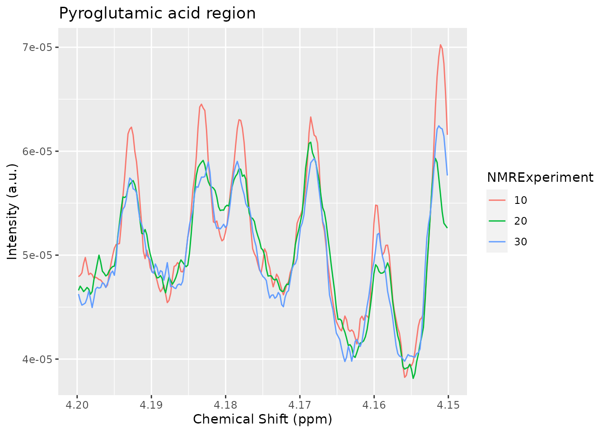
We define the peak regions and integrate them. Note how we can correct the baseline or not. If we correct the baseline, the limits of the integration will be connected with a straight line and that line will be used as the baseline, that will be subtracted.
pyroglutamic_acid <- list(pyroglutamic_acid1 = c(4.19, 4.195),
pyroglutamic_acid2 = c(4.18, 4.186),
pyroglutamic_acid3 = c(4.175, 4.18),
pyroglutamic_acid4 = c(4.165, 4.172))
regions_basel_corr_ds <- nmr_integrate_regions(dataset_norm, pyroglutamic_acid, fix_baseline = TRUE)
regions_basel_corr_matrix <- nmr_data(regions_basel_corr_ds)
print(regions_basel_corr_matrix)
#> pyroglutamic_acid1 pyroglutamic_acid2 pyroglutamic_acid3 pyroglutamic_acid4
#> 10 2.672184e-08 3.298304e-08 2.434264e-08 5.572668e-08
#> 20 2.157743e-08 1.779341e-08 1.204387e-08 5.144560e-08
#> 30 2.297715e-08 2.548584e-08 1.821153e-08 5.183817e-08
#> 40 2.093958e-08 3.020573e-08 2.259284e-08 4.803844e-08
regions_basel_not_corr_ds <- nmr_integrate_regions(dataset_norm, pyroglutamic_acid, fix_baseline = FALSE)
regions_basel_not_corr_matrix <- nmr_data(regions_basel_not_corr_ds)
print(regions_basel_not_corr_matrix)
#> pyroglutamic_acid1 pyroglutamic_acid2 pyroglutamic_acid3 pyroglutamic_acid4
#> 10 2.775960e-07 3.327432e-07 2.683463e-07 3.765365e-07
#> 20 2.727197e-07 3.294237e-07 2.673306e-07 3.796868e-07
#> 30 2.697318e-07 3.246928e-07 2.622664e-07 3.669548e-07
#> 40 2.707183e-07 3.289879e-07 2.607063e-07 3.705510e-07We may plot the integral values to explore variation based on the baseline subtraction.
dplyr::bind_rows(
regions_basel_corr_matrix %>%
as.data.frame() %>%
tibble::rownames_to_column("NMRExperiment") %>%
tidyr::gather("metabolite_peak", "area", -NMRExperiment) %>%
dplyr::mutate(BaselineCorrected = TRUE),
regions_basel_not_corr_matrix %>%
as.data.frame() %>%
tibble::rownames_to_column("NMRExperiment") %>%
tidyr::gather("metabolite_peak", "area", -NMRExperiment) %>%
dplyr::mutate(BaselineCorrected = FALSE)
) %>% ggplot() + geom_point(aes(x = NMRExperiment, y = area, color = metabolite_peak)) +
facet_wrap(~BaselineCorrected)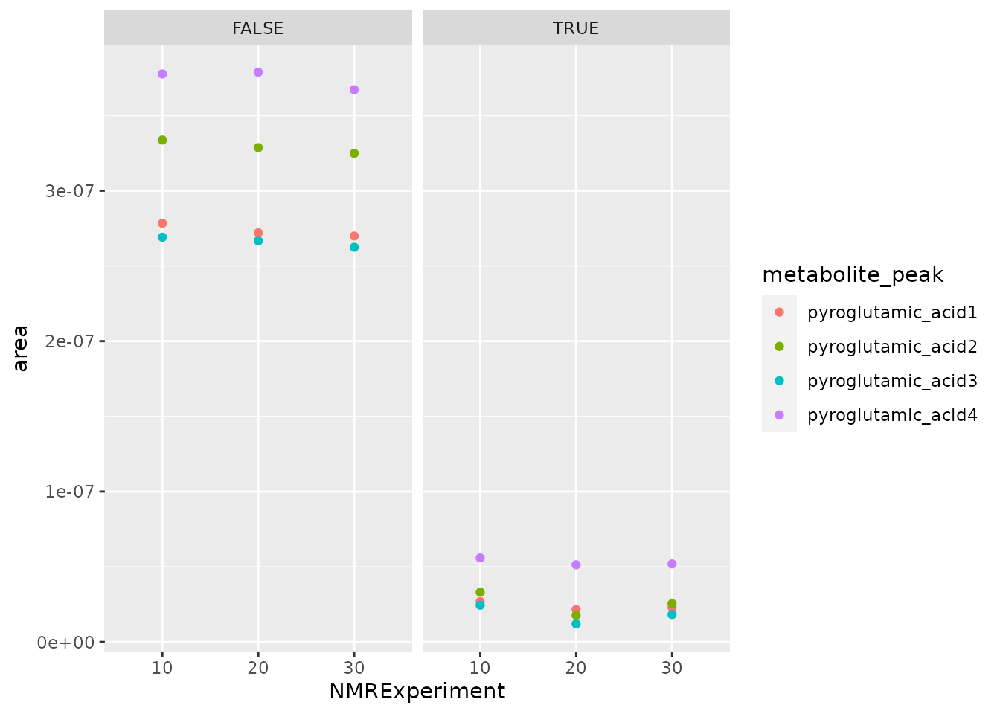
After applying any feature selection or machine learning, Alps allows the identification of features of interest through nmr_identify_regions_blood. The function gives 3 posibilities sorted by the most probable metabolite (see nmr_identify_regions_blood for details).
ppm_to_assign <- c(4.060960203, 3.048970634,2.405935596,0.990616851,0.986520147, 1.044258467)
identification <- nmr_identify_regions_blood (ppm_to_assign)
#> [1] 4.06096
#> your peak at 4.060960203 probably corresponds to Choline, Creatinine or Myoinositol
#>
#> [1] 3.048971
#> your peak at 3.048970634 probably corresponds to Creatine, Creatinine or L-Lysine
#> [1] 2.405936
#> your peak at 2.405935596 probably corresponds to Pyroglutamic acid, Succinic acid or NA
#> [1] 0.9906169
#> your peak at 0.990616851 probably corresponds to L-Alpha-aminobutyric acid, L-Valine or NA
#> [1] 0.9865201
#> your peak at 0.986520147 probably corresponds to L-Alpha-aminobutyric acid, L-Valine or NA
#> [1] 1.044258
#> your peak at 1.044258467 probably corresponds to L-Valine, NA or NABesides all those techniques, you can easily implement your own. You can extract the raw matrix and manipulate it at will. As long as you don’t permute the rows, you can always replace the raw matrix of the nmr_dataset_1D object through the nmr_data function:
full_spectra_matrix <- nmr_data(dataset)
print(full_spectra_matrix[1:4, 1:6]) # change it as you wish
#> -0.5 -0.49977 -0.49954 -0.49931 -0.49908 -0.49885
#> 10 1672.0444 1433.8976 1072.32940 1401.1787 1634.7485 1344.6377
#> 20 1927.6172 2056.4906 1848.73786 1584.5820 1970.5705 2469.3993
#> 30 1337.0010 1029.6625 645.62476 641.0098 825.0757 799.6986
#> 40 992.9131 307.3925 -42.01287 185.1322 319.2994 152.4777
nmr_data(dataset) <- full_spectra_matrix # Rewrite the matrixnmr_dataset_1D object from a matrixYou can also create an nmr_dataset_1D object from scratch with the new_nmr_dataset_1D function:
nsamp <- 12
npoints <- 20
# Create a random spectra matrix
dummy_ppm_axis <- seq(from = 0.2, to = 10, length.out = npoints)
dummy_spectra_matrix <- matrix(runif(nsamp*npoints), nrow = nsamp, ncol = npoints)
metadata <- list(external = data.frame(NMRExperiment = paste0("Sample", 1:12),
DummyClass = c("a", "b"),
stringsAsFactors = FALSE))
your_custom_nmr_dataset_1D <- new_nmr_dataset_1D(ppm_axis = dummy_ppm_axis,
data_1r = dummy_spectra_matrix,
metadata = metadata)
print(your_custom_nmr_dataset_1D)
#> An nmr_dataset_1D (12 samples)
plot(your_custom_nmr_dataset_1D) +
ggtitle("Of course those random values don't make much sense...")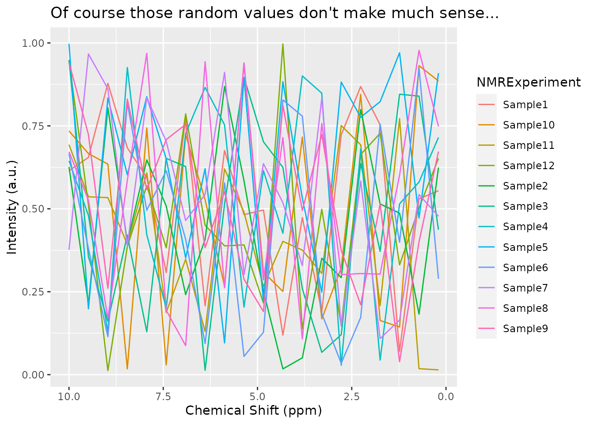
This vignette shows many of the features of the package, some features have room for improvement, others are not fully described, and the reader will need to browse the documentation. Hopefully it is a good starting point for using the package.
e.g. it can inadvertedly distort the PQN normalization results↩